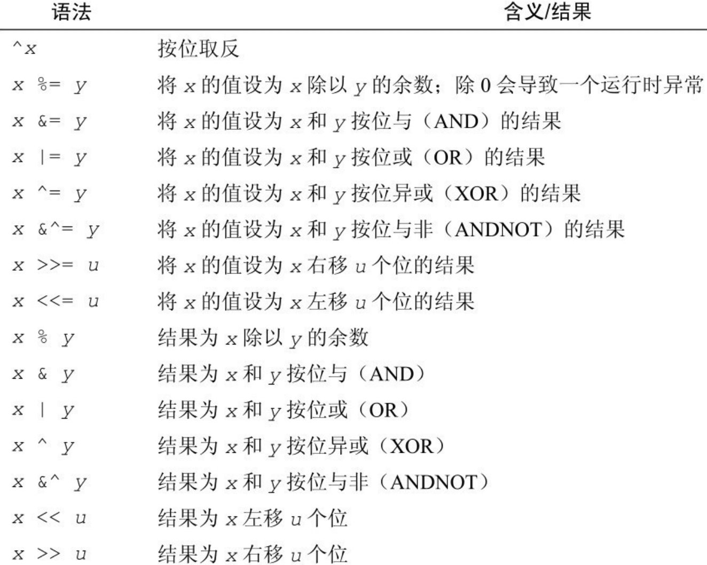

“In Go, the code does exactly what it says on the page.” – Andrew Gerrand
Go 变量标识符
给一个 go 变量命名(标识符)的时候，通常使用大骆驼(BigCamel)和小骆驼(smallCamel)命名法，只要保证不和内置的25个关键词冲突就行。 当然 go 也内置了一些自己的标识符，见下图，我建议你最好不要使用这些同名的预定义标识符来命名变量。 只要是非空的字母或者数字（第一个必须是字母），并且不和关键词冲突就是合法的标识符。注意标识符区分大小写，并且在 go 里边只有大写开头的才能导出被其他包使用（后文我们再讨论）。

静态/动态类型，弱类型/强类型
静态，动态类型指的是类型是在编译期还是运行期间确定，而弱类型和强类型指的是有没有隐式类型转换。 比如 Python 就是动态强类型语言(很多人误以为弱类型)，而 php/js 是动态弱类型语言。 go 是静态强类型语言，我们在编写代码的时候需要先声明变量的类型（或者编译器推导）， 在不同类型之间转换的时候需要我们强制使用类型转换符。
go 如何声明一个变量
go 中声明一个变量很简单，使用 var 关键字就可以了，声明之后默认使用其类型的零值初始化。 比如int 类型默认是0，字符串就是空串。
当然为了简化 go 还提供了一种使用 := 直接声明并且初始化的方式。请编写如下代码观察输出(我建议你纯手敲练练手速，不要直接复制)：
package main
import "fmt"
func main() {
var i int64 // 声明一个 int64 变量。注意类型放在后边，习惯就好了
var b string // 声明一个字符串
fmt.Println("i is ", i) // 0
fmt.Println("b is ", b) // ""
// 同时声明并且赋值
var floatNum float64 = 1.0
var price1, price2 float64 = 8.8, 9.6
fmt.Println(floatNum, price1, price2)
// 还有一种简化方式，声明并且赋值，编译器负责推断类型
ii := 1
s := "Hello Go!"
fmt.Println("ii is ", ii) // 1
fmt.Println("s is ", s) // Hello Go!"
}
Go 的基础类型
无论是学习过程式、面向对象还是并发编程，我们都需要首先学习一门语言的基础类型，对于大部分业务常用编程语言来说就是数值类型和字符串类型。
bool 类型
bool 就是真或者假，一些编程语言使用 0 和非 0 表示。但是 go 里比如 if 语句后边只能是 bool 值或者返回 bool 值的表达式，而不像 c 一样可以使用 int 值。

// 让我们编写一些小的 demo 代码来测试一下
func boolDemo() {
var b1 bool
b2 := false
b3 := true
if b1 {
fmt.Println("b1 is true")
}
if b2 {
fmt.Println("b2 is true")
}
if b3 {
fmt.Println("b3 is true")
}
}
数值类型(整型和浮点类型)
整数类型
整数类型可以说是我们最常用的一种类型，如果你用 python 的话非常省心(Python3 int 就是大数类，内存够用无需担心溢出)，但是 go 里边却有非常多的 int 类型。 对于一门追求性能的语言来说，有些地方可以省内存就省一点。这里需要注意的就是每种类型取值范围，确保不要超范围了。业务中经常使用也就是 int64/int32 了。

当然作为整数，一般常用的那就是加减乘除之类的数学运算了：

// 同样我们编写简单的测试代码来熟悉它们，确保你不要直接复制粘贴。整本电子书和代码都是笔者一个字一个字敲出来的
func intDemo() {
var i64 int64
i64 = 10
fmt.Println(i64 + 10)
i32 := int32(42)
fmt.Println(i32 + 10)
fmt.Println(
math.MaxInt64, // 需要导入 math 包，见本章示例代码
)
a, b := 10, 0
fmt.Println(a / b) // Boom! 会发生什么。错误处理我们后文介绍
}
func main() {
intDemo() // 虽然还没讲到 函数，不过相信你也知道如何调用了
}
浮点数类型
接下来是浮点数，很多场景我们计算的时候都需要有小数点，go 里有两种类型的浮点数。

math 包里很多函数以 float64 作为参数，你可以提前看一下 go 文档看看提供了哪些函数。 浮点数同样也是常见的加减乘除，这里请大家自己编写一些代码来练习，笔者不再赘述。
数值转换小提示
- 注意不同数值类型之间转换(大转小)可能有截断，比如一个 int64 转成 int32 类型的数字
- 可以使用 int(float) 转换一个 浮点数到整数，小数部分会丢弃。但是如果浮点数的值超过了整数类型范围，结果是不可预期的
- 注意计算机使用二进制不能精确表示 float 数字，当比较两个浮点数时你要格外小心不能用等号直接比较。(通常作差绝对值小于一个很小的阈值)
- 业务中经常使用 float64，因为 math 函数很多接受 float64 作为参数
- 你可以通过 math.MaxInt32 类似的定义查看一个类型的最大值
复数类型
复数在常见业务代码中使用比较少，这里就略过了。你可以使用 complex() 来创建复数。
延伸(大整数运算)
某些场景下， 如果64位依然满足不了你，你可以使用大整数 big.Int 和 有理数 big.Rat 类型。
字符串
业务中另一个最常用的就是字符串(string)了，web 开发几乎天天就是和字符串打交道。Go的字符串是使用 UTF-8 编码的字符序列，这意味着你可以使用任意国家的语言。 Go 中我们可以使用双引号(")和反引号(`)来创建字符串，区别反引号会忽略转义符，并且可以创建多行字符串。
func stringDemo() {
// 如果字符串本身也有双引号，就需要把里边的双引号使用 \ 转义
s1 := "\"Hello Go\""
// 使用反斜线就可以直接包含双引号了
s2 := `"Hello Go"`
fmt.Println(s1) // 打印出 "Hello Go"
fmt.Println(s2) // 打印出 "Hello Go"
s3 := `
你好
`
s4 := "Golang !"
fmt.Println(s3 + s4)
}
字符串支持如下操作：

字符串和数值类型的转换
在 Python 里进行这种转换是一件很容易的事情，但是 go 里边可不方便。我列出来以下代码你就知道啦： 注意这里的 Atoi 是 Ascii to Integer 的缩写，视频里有个口误。
func testConvert() { // 测试 int 和 string(decimal) 互相转换的函数
// https://yourbasic.org/golang/convert-int-to-string/
// int -> string
sint := strconv.Itoa(97)
fmt.Println(sint, sint == "97")
// byte -> string
bytea := byte(1)
bint := strconv.Itoa(int(bytea))
fmt.Println(bint)
// int64 -> string
sint64 := strconv.FormatInt(int64(97), 10)
fmt.Println(sint64, sint64 == "97")
// int64 -> string (hex) ，十六进制
sint64hex := strconv.FormatInt(int64(97), 16)
fmt.Println(sint64hex, sint64hex == "61")
// string -> int
_int, _ := strconv.Atoi("97")
fmt.Println(_int, _int == int(97))
// string -> int64
_int64, _ := strconv.ParseInt("97", 10, 64)
fmt.Println(_int64, _int64 == int64(97))
// https://stackoverflow.com/questions/30299649/parse-string-to-specific-type-of-int-int8-int16-int32-int64
// string -> int32，注意 parseInt 始终返回的是 int64，所以还是需要 int32(n) 强转一下
_int32, _ := strconv.ParseInt("97", 10, 32)
fmt.Println(_int32, int32(_int32) == int32(97))
// int32 -> string, https://stackoverflow.com/questions/39442167/convert-int32-to-string-in-golang
i := 42
strconv.FormatInt(int64(i), 10) // fast
strconv.Itoa(int(i)) // fast
fmt.Sprint(i) // slow
// int -> int64 ，不会丢失精度
var n int = 97
fmt.Println(int64(n) == int64(97))
// string -> float32/float64 https://yourbasic.org/golang/convert-string-to-float/
f := "3.14159265"
if s, err := strconv.ParseFloat(f, 32); err == nil {
fmt.Println(s) // 3.1415927410125732
}
if s, err := strconv.ParseFloat(f, 64); err == nil {
fmt.Println(s) // 3.14159265
}
}
常量和变量
常量顾名思义你没法改变它，在一些全局变量中使用 const 会更加安全。常量表达式是在编译期计算。 对于一些被整个模块或者其他模块使用的变量来说，最好定义成 const 防止被意外修改。 比如我们会经常在一些文件开头看到类似 const 定义：
const (
Sunday = 0
Monday = 1
Tuesday = 2
Wednesday = 3
Thursday = 4
Friday = 5
Saturday = 6
)
枚举
对于上述这种递增场景，go 还提供了一种更加简洁的方式来定义，使用 iota 表达式，它可以帮助我们完成自增操作(只有这种常见才推荐去使用 iota)
const (
Sunday = iota
Monday
Tuesday
Wednesday
Thursday
Friday
Saturday
)
你可以编写代码打印一下看看剩下的值是多少？
小问题：
- 为什么有 int 还需要 int32 和 int64，业务代码里如何选择呢？
- 请你尝试打印每种 int 类型的数值范围？
参考：
- 部分图片来自《Go 语言程序设计》
- Ultimate Visual Guide to Go Enums and iota